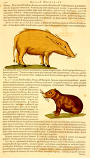

[Guilielmus Piso et Georgius Marcgravius], Historia naturalis Brasiliae, auspicio et beneficio illustriss. J. Mauritii com. Nassav. [...] adornata, in qua non tantum plantae et animalia, sed et indigenarum morbi, ingenia et mores describuntur et iconibus supra quingentas illustrantur. Lugduni Batavorum, apud Franciscum Hackium et Amstelodami, apud Lud, Elzevirium, 1648. -- (1407 B 3)
Tijdens zijn verovering van Brazilië op de Portugezen ten behoeve van de handelsbelangen van de West-Indische Compagnie, werd Johan Maurits van Nassau vergezeld van een ‘wetenschappelijke staf’, waarvan Willem Piso (1610-1678) en Georg Markgraf (1610-1643) deel uitmaakten. Piso had medicijnen gestudeerd en was de lijfarts van Johan Maurits, Markgraf was astronoom, wiskundige en eveneens medicus. Samen waren ze verantwoordelijk voor de eerste uitgebreide beschrijving niet van alleen de flora en fauna van Brazilië, maar ook van de daar heersende ziekten en van de zeden en gewoonten der inheemse bevolking. Het boek werd op verzoek van Johan Maurits door de geograaf Johannes de Laet uitgegeven, die vooral Markgraf, die in 1643 in Angola was gestorven, prees als een groot geleerde en onderzoeker. Het boek maakte door zijn grote wetenschappelijke kwaliteiten grote furore; vooral voor de tropische geneeskunde is het een ‘classic’ gebleven.
De meer dan vijfhonderd gedetailleerde houtsneden geven een voortreffelijke indruk van de planten en dieren. In dit gekleurde exemplaar komen de kwaliteiten ervan nog extra naar voren. Getoond worden het Guinese biggetje en de capibara.
Literatuur
- Zo wijd de wereld strekt. ‘s-Gravenhage 1979, vooral p. 173.
| vorige pagina | top pagina |